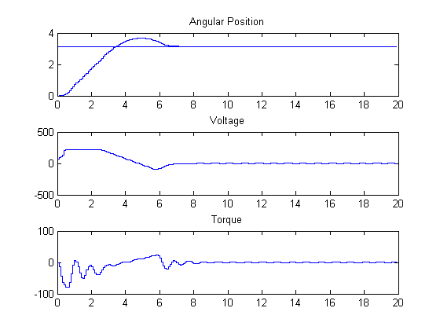
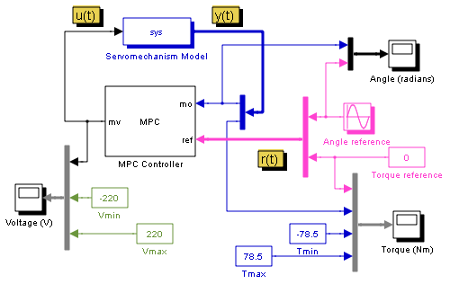
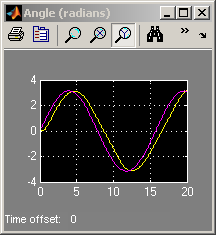
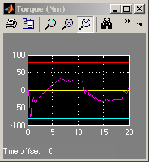
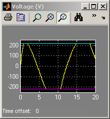

MPC Control of a DC Servomotor
Contents
This demonstration shows how to design an MPC controller to control a DC servomechanism under voltage and shaft torque constraints [1].
Reference
[1] A. Bemporad and E. Mosca, ``Fulfilling hard constraints in uncertain linear systems by reference managing,'' Automatica, vol. 34, no. 4, pp. 451-461, 1998.
Define the parameters of the DC-servo motor [1].
mpcmotormodel
MPC Controller Setup
clear ManipulatedVariables OutputVariables
Define MPC object fields.
ManipulatedVariables=struct('Min',umin,'Max',umax,'Units','V'); OutputVariables(1)=struct('Min',-Inf,'Max',Inf,'Units','rad'); OutputVariables(2)=struct('Min',Vmin,'Max',Vmax,'Units','Nm'); Weights=struct('Input',uweight,'InputRate',duweight,'Output',yweight); clear Model Model.Plant=sys; Model.Plant.OutputGroup={1 'Measured';2 'Unmeasured'}; PredictionHorizon=10; ControlHorizon=2;
Create MPC object in workspace.
ServoMPC=mpc(Model,Ts,PredictionHorizon,ControlHorizon); ServoMPC.Weights=Weights; ServoMPC.ManipulatedVariables=ManipulatedVariables; ServoMPC.OutputVariables=OutputVariables;
-->The "Weights.ManipulatedVariables" property of "mpc" object is empty. Assuming default 0.00000. -->The "Weights.ManipulatedVariablesRate" property of "mpc" object is empty. Assuming default 0.10000. -->The "Weights.OutputVariables" property of "mpc" object is empty. Assuming default 1.00000. for output(s) y1 and zero weight for output(s) y2
Simulation Using SIM
disp('Now simulating nominal closed-loop behavior');
Tf=round(Tstop/Ts);
r=pi*ones(Tf,2);
[y1,t1,u1,xp1,xmpc1]=sim(ServoMPC,Tf,r);
Now simulating nominal closed-loop behavior -->Converting model to discrete time. -->MPC problem is constrained and "ManipulatedVariables.RateMin" is not completely specified or has infinite values. Setting values to -10 to prevent numerical problems in QP. -->The "Model.Noise" property of the "mpc" object is empty. Assuming white noise on each measured output channel.
Plot results.
subplot(311) stairs(t1,y1(:,1)); hold on stairs(t1,r(:,1)); hold off title('Angular Position') subplot(312) stairs(t1,u1); title('Voltage') subplot(313) stairs(t1,y1(:,2)); title('Torque')
Simulation Using Simulink®
if ~mpcchecktoolboxinstalled('simulink') disp('Simulink(R) is required to run this part of the demo.') return end
Run simulation.
open_system('mpc_motor') sim('mpc_motor',Tstop);   
bdclose('mpc_motor')